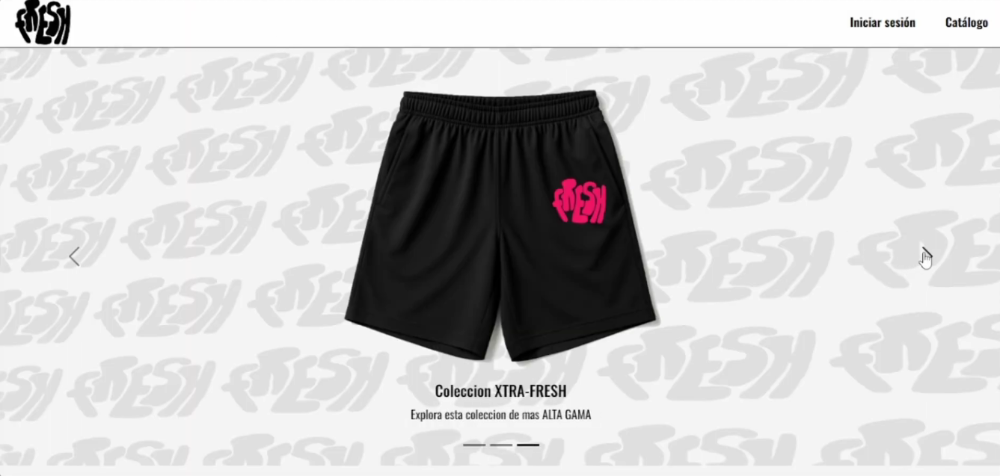

Fresh Clothes
Proyecto de media tecnica, es una pagina de ropa, con un diseño sencillo, pero con un buen funcionamiento, es un proyecto que me gusta mucho, y que me ha ayudado a mejorar mis habilidades en el desarrollo web. Aca se pueden ver mis habilidades en HTML, CSS y, ademas de que es un proyecto que me gusta mucho, y que me ha ayudado a mejorar mis habilidades en el desarrollo web. Trabajo hecho en equipo